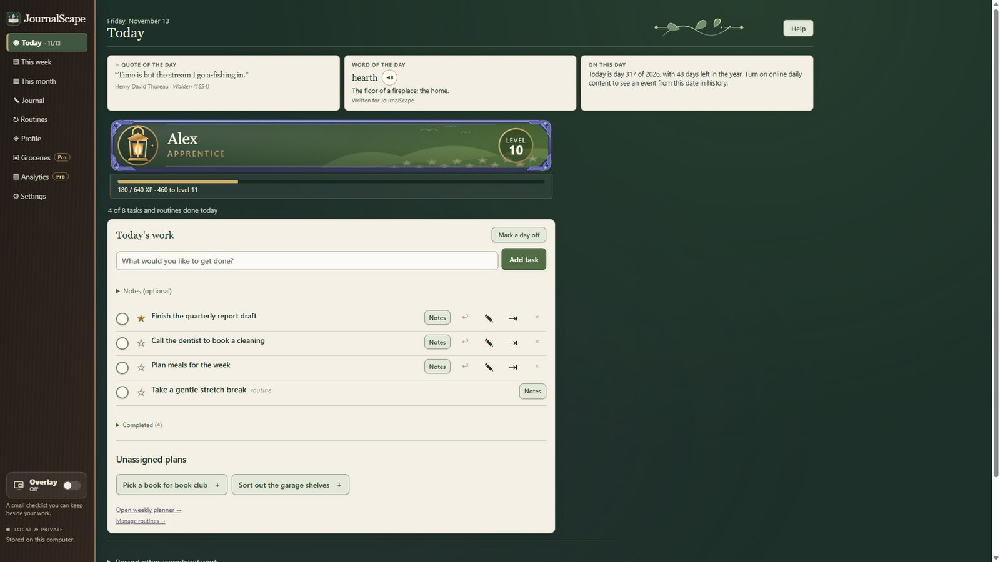
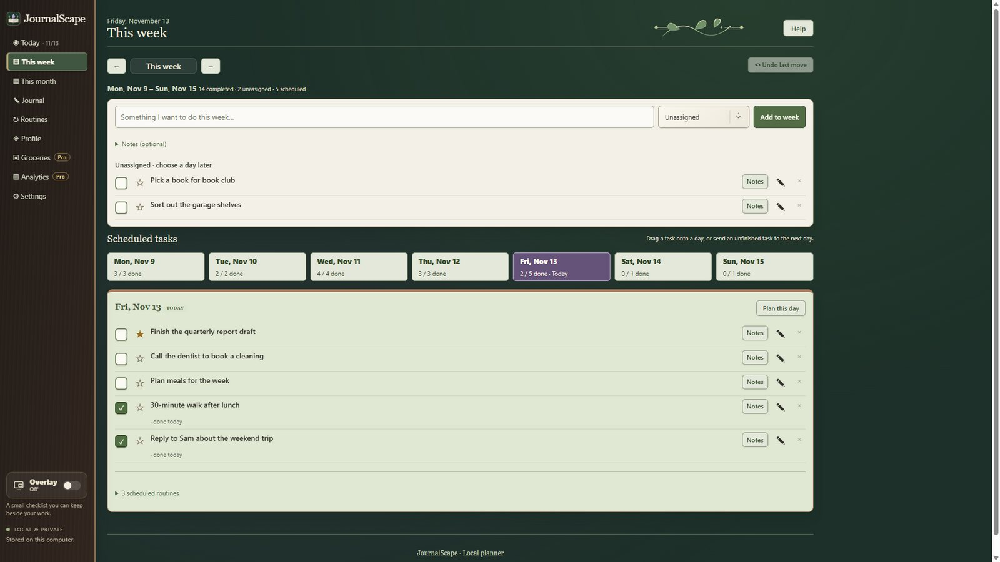
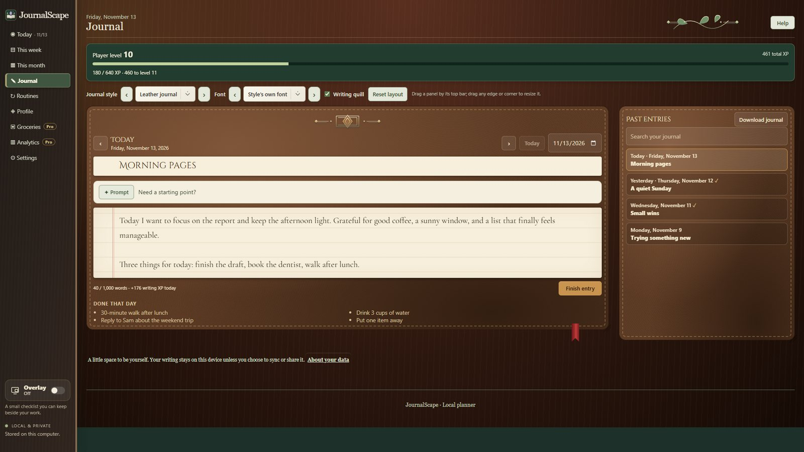
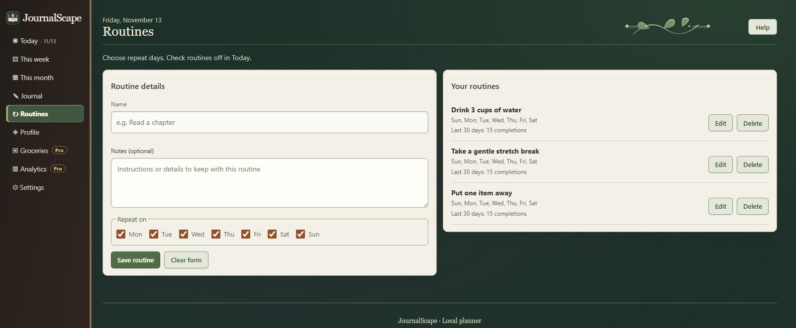

Real progress you can see
Finishing a task, keeping a routine or writing in your journal earns XP. Level up and unlock titles, nameplate frames, backgrounds and emblems: rewards for things you actually did.
JournalScape
A cozy planner, to-do list and daily journal for Windows, with a light role-playing layer. Every task you finish and every page you write earns experience toward levels, titles and nameplates you can show off.
Why JournalScape
Most planners are tidy and forgettable. JournalScape turns your real day into steady, visible progress, without guilt, streak pressure or clutter.
Finishing a task, keeping a routine or writing in your journal earns XP. Level up and unlock titles, nameplate frames, backgrounds and emblems: rewards for things you actually did.
Today, this week and this month side by side, with routines, starred priorities and a small always-on-top checklist that sits beside your work.
One page per day in beautiful journal styles, with gentle prompts, searchable past entries and a note of what you got done that day.
No account, no servers of our own, no ads and no tracking. Your plans and your journal are saved on your own computer.
Features

Add what you want to get done, star what matters most and check things off. Routines appear right alongside your tasks.

Lay out your week day by day, keep loose plans for "sometime this week", and see the whole month on a calendar.

Write about your day on its own page. Each entry is saved to its date, so you can look back, search and download your whole journal.

Your effort builds a character. Earn XP for real work, climb levels, and unlock rewards to make your nameplate your own.

Drink water, stretch, tidy one thing: set small routines that repeat on the days you choose and count toward your progress.
A small overlay keeps today's list beside your work. Tick the "On top" box to keep it above other windows.
Choose a colour theme, a journal style and an interface size that suits your screen.
Soft sound effects for finishing tasks and levelling up, with four sound sets to choose from. Or turn them off.
Everything is saved on your PC. Make a backup or download your journal whenever you like.
Free & Pro
The planner, journal and progression are free. Two optional one-time add-ons are planned for the Steam release.
Free
Optional
$1.99 one time
Optional
$4.99 one time
Planned prices in US dollars; Steam shows the price in your currency.
FAQ
Yes. The planner, journal, routines and levels 1 to 10 with all their rewards are free. Pro and the Supporter Pack are optional one-time purchases, and there are no subscriptions or ads.
Both. It is a real planner and journal first. The role-playing layer (XP, levels and rewards) is there to make finishing things feel good.
No. JournalScape runs on your PC and saves everything there. It works offline.
Nothing bad. There are no streaks to lose. Achievements count the days you got something done, not days in a row.
JournalScape is coming to Steam. The store page link will appear here as soon as it is live.
JournalScape has no accounts, no servers of its own, no ads and no tracking. Everything you plan is stored on your own computer, and, only if you turn on phone sync, in a hidden JournalScape folder in your own Google Drive that no one else can see. An optional phone companion shows today's tasks, routines, journal and groceries.
If you connect your Google account, JournalScape reads your calendar list and events so it can show them in its Month view. It asks only for read-only access: it never creates, changes or deletes anything in your Google account. Your events stay on your own computer and are never sent anywhere else. You can disconnect at any time. Read the full privacy policy.